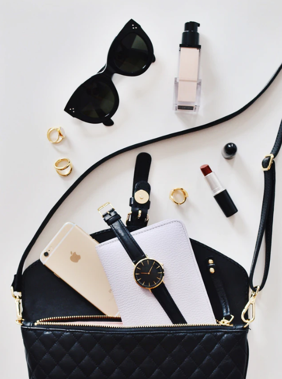
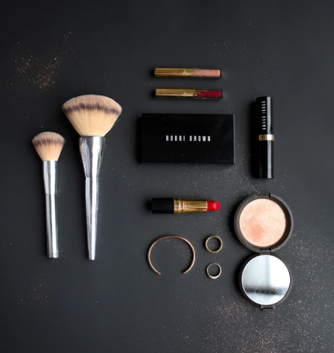
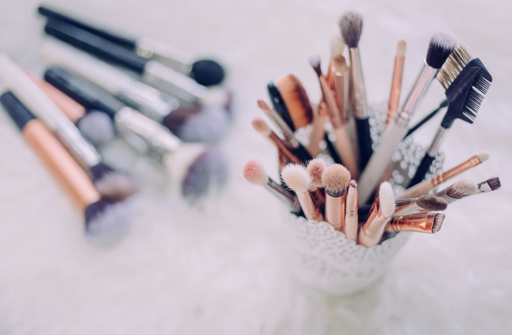

MY VISION
Hello les filles! On se retrouve pour l’habituel article concernant la Sepharo Box puisque je sais que vous l’attendez toujours avec beaucoup d’impatience. Je comprends car elle permet toujours de découvrir plein de produits ! Cette nouvelle édition de rentrée pour le mois de Septembre est, je dois dire, assez dingue ! Offerte à partir de 0€ d’achats avec le code BACKTOSCHOOL par votre site préféré ! Elle est composée de 18 mini produits ! Ce qui est beaucoup plus que d’habitude ! – eau de parfum Idôle LAÔME (5ml)
– masque de nuit hydratant Drink Up Intensive ORINS (15ml)
– crème super hydratante à l’acide hyaluronique SEPRA (10ml)
– base de maquillage pour le teint Step X (5ml)
– shampoing volumineux RHUA (22ml)
– soin hydratant visage No Worries DR ROEUCK’S (15ml)
– mascara Damn Girl TROP FAED (6g)
– baume Beauté Éclair CLAINS (15ml)
– démaquillant yeux et lèvres SEPRA (25ml)
– base de teint The Porefessional BEIT (3ml)
– mascara volume noir Climax NAS
– masque revitalisant pour cheveux BITOGEO (29ml)
– crème lissante pour le visage Éclat Boral POLATAR (25ml)
– huile sèche pour le visage GARENCKA (5ml)
– crème multi-usage EGPTIAN MAGIM (7,5ml)
– base de teint illuminatrice et correctrice TC Serum n°180 BY GM (7ml)
– primer yeux ANASTASIA BEVEY HILS (7ml)
– Primer Skin Love BEK

Comme vous l’avez sans doute constaté j’ai laissé le blog en stand-by ces derniers mois à mon grand regret mais je n’avais plus la force ni le temps d’être partout à la fois et que ça soit bloguer ou filmer je le fais avec envie et plaisir avant tout donc j’ai su qu’il était le moment de faire une pause car le but n’est pas de faire les choses bâclées ou à contre coeur. Puis Marionnaud m’a proposé une chouette idée d’article et toute personne qui me côtoie de près ou de loin sait à quel point J’AIME la période de Noël, genre vraiment beaucoup. Sans mentionner que la rédaction de mes Wishlists mensuelles étaient aussi mes préférées donc les deux réunis je n’ai pas hésité à revenir sur mon clavier !

Les routines make-up minimalistes, ça me connait : j’ai de moins en moins envie de passer du temps dans la salle de bain et de plus en plus envie d’aller à l’essentiel et de réduire le nombre de produits que j’utilise au quotidien.Je vous propose donc un maquillage naturel et simple pour tous les jours qui mise uniquement sur les lèvres. J’ai laissé de côté le fond de teint et les fards à paupière (les deux étapes qui, selon moi, demandent le plus de temps d’application) pour une routine make-up avec seulement 6 produits : poudre, bronzer, blush, crayon, mascara et rouge à lèvres.

A première vue, c’est bien trop beau pour être vrai: des palettes de 18 couleurs à 76€, des rouges à lèvres à 150€, des liners à 1123€… Vous vous doutez bien que ma curiosité a été piquée. J’ai donc décidé de tester ! Je ne vous cache pas que j’étais vraiment sceptique…Alors vous commencez à me connaître un peu, mon truc à moi ce sont les palettes de toutes les couleurs. Je trouve que c’est le meilleur moyen de mettre une marque de make-up sur le grill ! C’est pourquoi j’ai testé pour vous la « Palette d’ombres 18 couleurs Diamant » de chez B maquillage, et j’ai été très très très très très très agréablement surprise.Pour une palette à 6 Euros, je ne m’attendais pas à une qualité de dingue. J’imaginais que certaines couleurs seraient sympas mais que d’autres le seraient beaucoup moins. ERREUR ! Cette palette est une petite merveille.